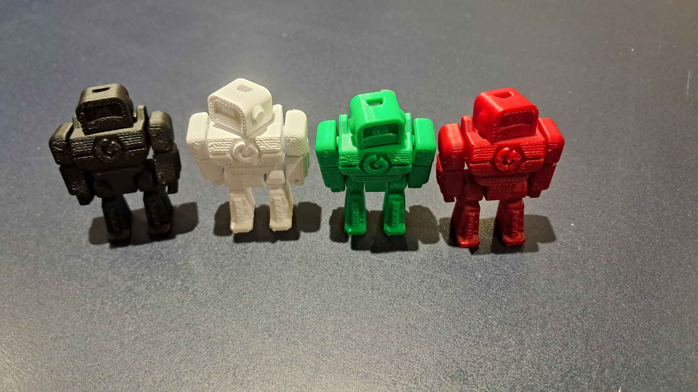
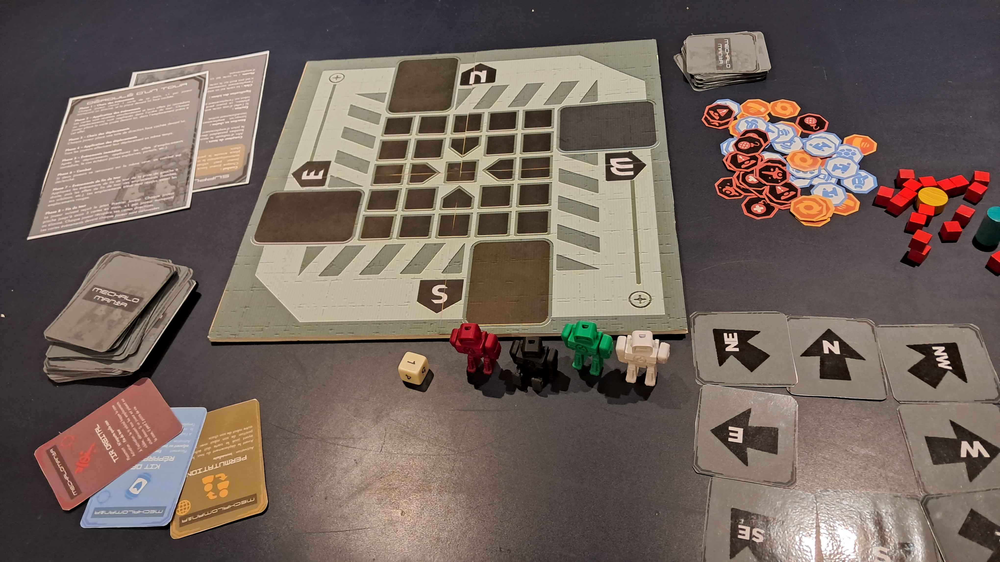

LE PLATEAU DE JEU
Une grille compacte de 5x5 cases, conçue pour forcer les affrontements. Contrairement aux grands plateaux, cet espace réduit empêche la fuite et garantit des parties rapides et nerveuses. Les zones de départ sont indiquées dans les quatre coins.

LES PIONS MECHA
Chaque figurine représente l'une des 4 machines d'élite du tournoi. Modélisées pour être stables et lisibles sur le plateau, elles permettent d'identifier instantanément votre position et celle de vos adversaires.

LES ACCESSOIRES DE JEU
Tout le nécessaire pour gérer la tactique : le deck de cartes Événements (incluant les mines, bombes et réparations), les jetons de vie (3 par joueur) et les sets de 8 tuiles de direction pour programmer vos mouvements face cachée.